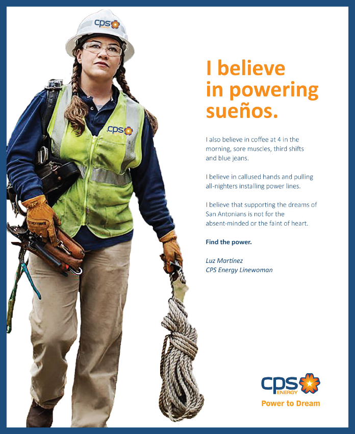
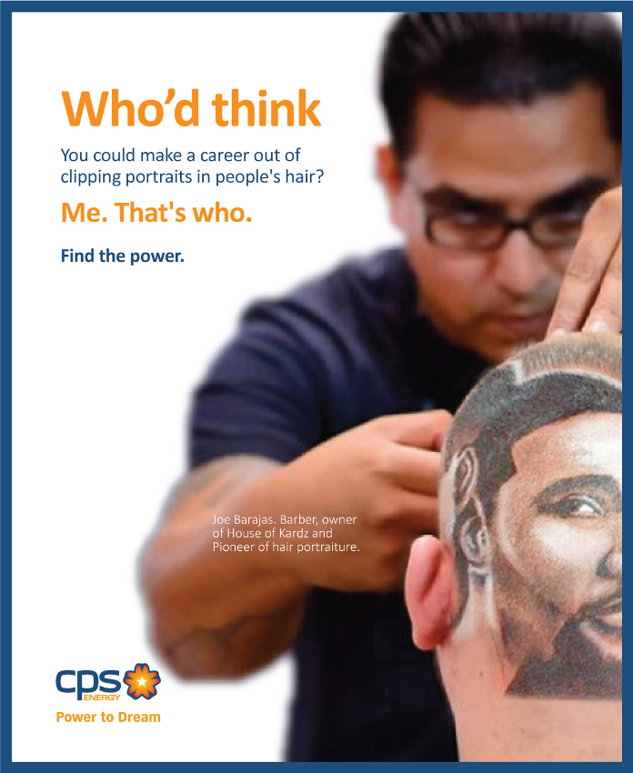
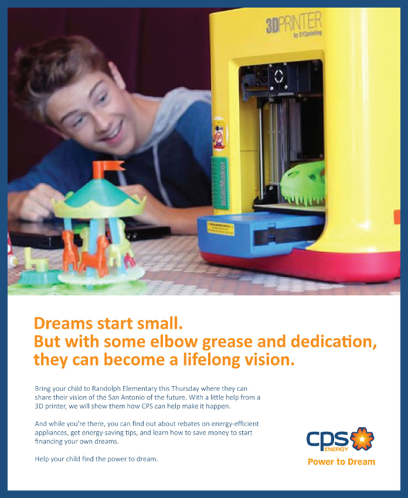
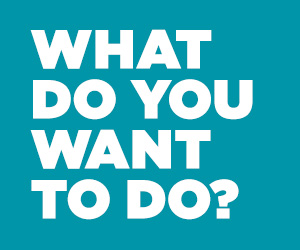
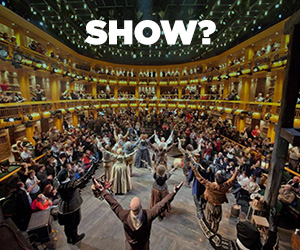
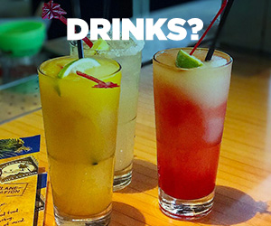
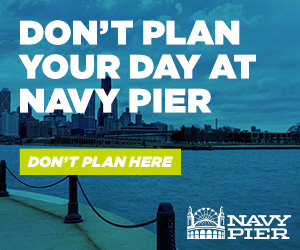
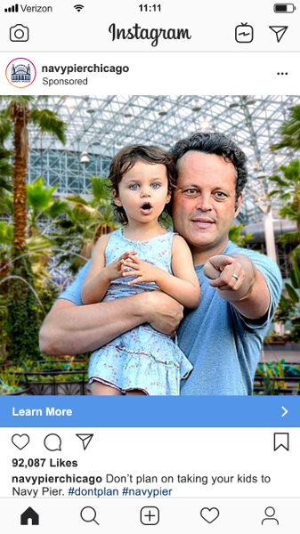
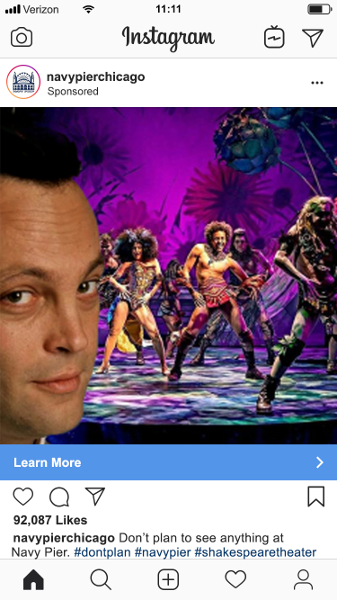
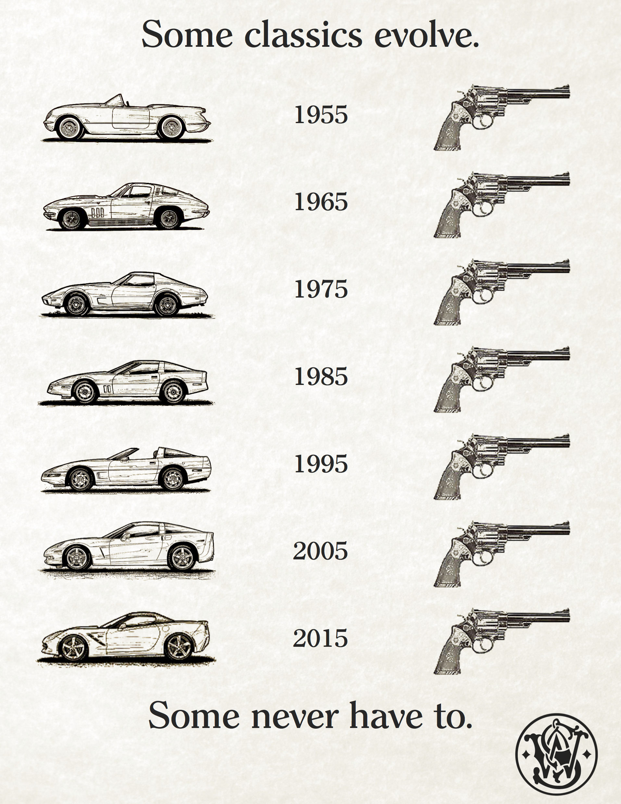

Spec work
Campaigns that might have been…but never were
[One line on why these exist.]

CPS Energy: Find the Power



Navy Pier: Don’t Plan
Radio, “On the Clock”
VINCE VAUGHN: I tell folks I’m going to Navy Pier, first thing they do is ask what I have planned. Like I wanna plan things when there’s a cornucopia of options around me.
I’m Vince Vaughn. I live in the real world my dude, with work, with schedules: be here, be there, be on time, don’t be late, don’t miss your appointments. I get paid to live on a schedule, this is my time.
So I’m gonna follow where fate leads me. Food, music, plays, art, tours, or maybe just a spectacular view of this beautiful town…it’s all up to that fickle lady’s fancy.
I don’t wanna make plans. So I go somewhere I don’t have to.
VO: Don’t plan your trip to Navy Pier.
Navy Pier: digital, Instagram, and OOH






9 images. Scroll sideways.
The Smith & Wesson Model 29
Just a thing I did when I heard Dirty Harry’s revolver was having its 60th birthday the same year as another American icon.
